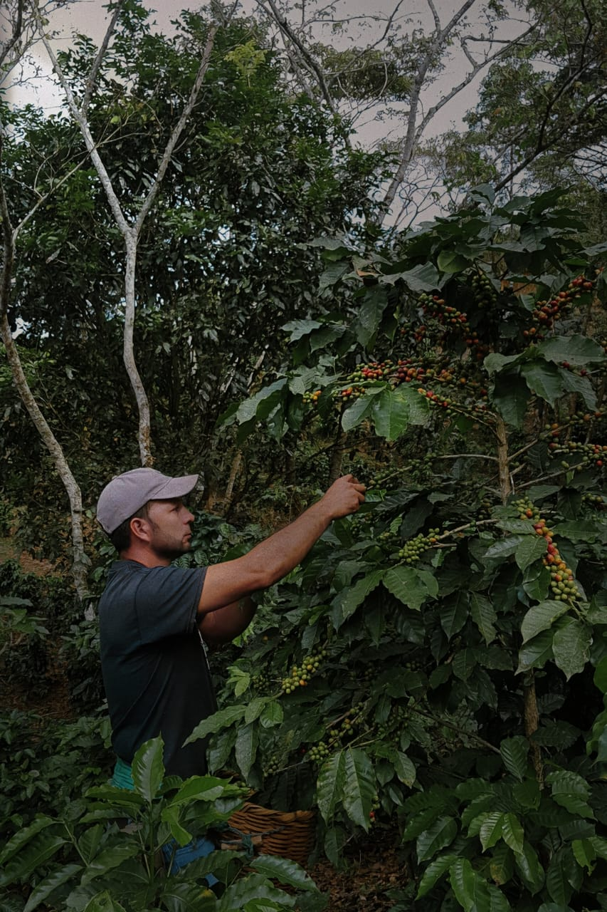
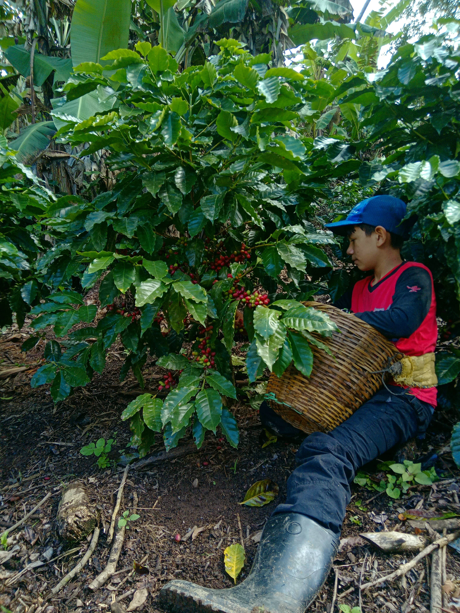
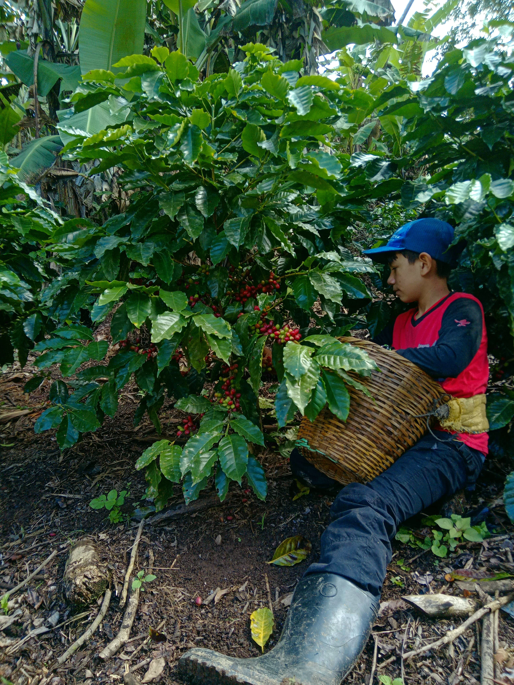
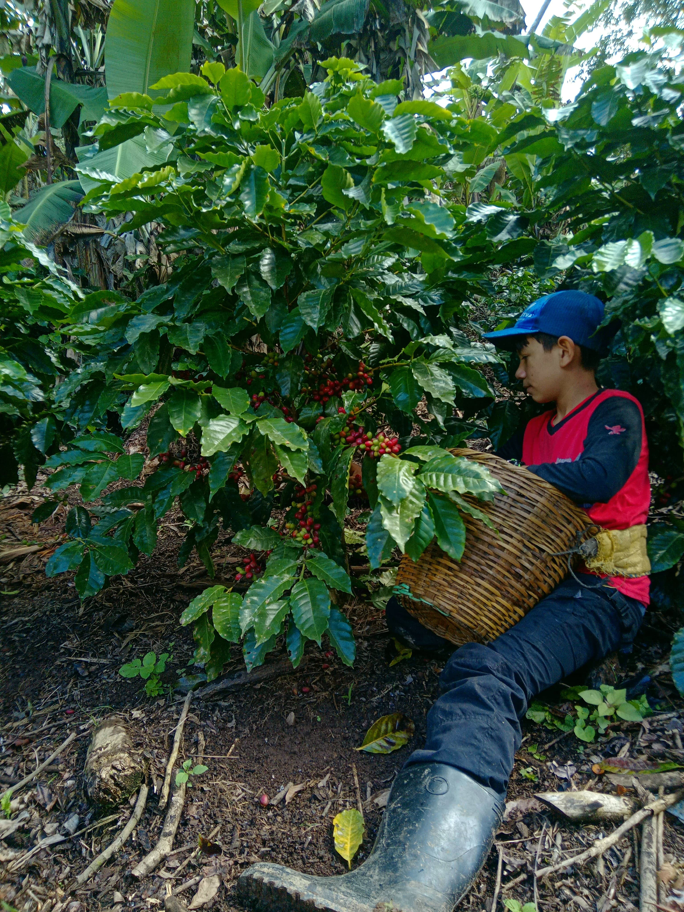
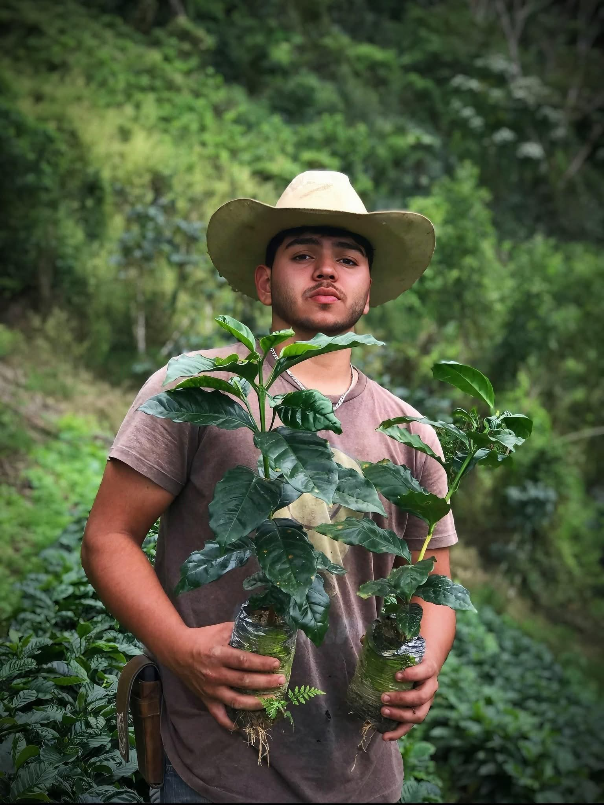

La esencia de Honduras en cada sorbo.
Café hondureño de altura, tueste medio y esencia familiar.



 


CAFÉ EN GRANO / MOLIDO
Tueste medio · Altura · Esencia familiar
Café Cortero 250g
100% arábica · Danlí
L 180

Nuestra historia
Sobre Café Cortero
Café Cortero es un proyecto familiar que produce café de calidad, amigable con el medio ambiente y con el sabor auténtico de Honduras.
Cada grano es cultivado con respeto, cosechado a mano y tostado con dedicación para conservar su esencia natural.
Proyecto familiar
Origen hondureño
Café sostenible

Contáctanos
Queremos compartir contigo la pasión por el café hondureño.
Escríbenos por WhatsApp o síguenos en
Facebook desde el botón de mensaje en pantalla.